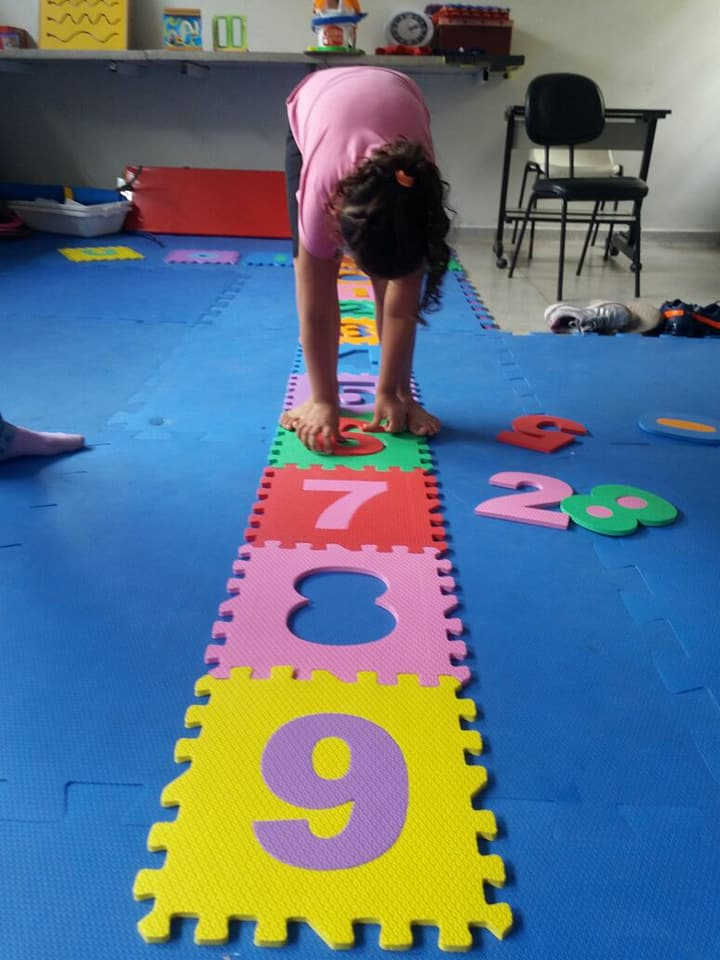

Sobre a AUMA
Nosso Trabalho
Fornecer atividades e terapias que possam promover o desenvolvimento da pessoa com TEA (Transtorno do Espectro Autista) tornando-o apto a participar das atividades familiares, escolares e sociais inibindo assim a exclusão da pessoa com deficiência no convívio social.
A AUMA conta hoje com 16 profissionais entre fisioterapeuta, terapeuta ocupacional, fonoaudióloga, psicóloga, pedagogos, assistente social. Além dos demais profissionais que realizam diariamente o atendimento dos setenta assistidos.
Através de terapias, atividades esportivas, lúdicas, oficinas de arte, cozinha pedagógica e jogos, busca a inclusão e o desenvolvimento do autista na sociedade e na vida escolar.
